Παϊδάκια ΣχάραΑρνίσια παϊδάκια ψημένα στα κάρβουνα, με λεμόνι
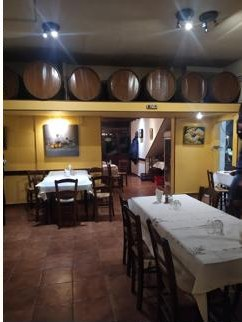
Παραδοσιακή ψησταριά · από το 1958
Ψητά στα κάρβουνα, όπως παλιά.
Στην Ιωλκού του Βόλου, εδώ και 58 χρόνια. Παϊδάκια, μπριζόλες, σουβλάκι και χειροποίητο μπιφτέκι στα κάρβουνα — με φρέσκια χωριάτικη, χωριάτικες πατάτες και χύμα κρασί.
Η ιστορία μας
Μία ταβέρνα του Βόλου με 58 χρόνια στη σχάρα.
Με 58 χρόνια στον χώρο της εστίασης, το κατάστημά μας αποτελεί μία από τις πιο αξιόπιστες επιλογές για καλό φαγητό και παρέα στον Βόλο. Ό,τι βγαίνει από την κουζίνα μας, βγαίνει όπως το φτιάχναμε από την πρώτη μέρα.
Η δουλειά μας είναι το κρέας στα κάρβουνα: παϊδάκια, μπριζόλες, σουβλάκι και χειροποίητο μπιφτέκι, ψημένα στη σχάρα. Δίπλα τους, φρέσκια χωριάτικη σαλάτα, χόρτα, χωριάτικες τηγανητές πατάτες και το χύμα κρασί μας.
Σε ένα ζεστό, οικογενειακό περιβάλλον με τα ξύλινα βαρέλια στους τοίχους — έτσι όπως ήταν πάντα οι ταβέρνες. Σας περιμένουμε στην Ιωλκού.
Καλή σας όρεξη — η οικογένεια Χόντου
Ιωλκού 259 · Βόλος
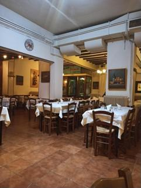
4,6★
από τους επισκέπτες μας στο Google
Γιατί «Ο Χόντος»
Ό,τι κάνει μια ταβέρνα, ταβέρνα
Τρεις λόγοι που οι Βολιώτες γυρίζουν σ' εμάς εδώ και δεκαετίες.
Στα κάρβουνα
Παϊδάκια, μπριζόλες, σουβλάκι και μπιφτέκι ψημένα στη σχάρα με κάρβουνα — μυρωδιά και γεύση παλιάς ταβέρνας.
58 χρόνια εμπειρία
Από το 1958 στην ίδια δουλειά. Μια από τις πιο αξιόπιστες ταβέρνες του Βόλου για φαγητό και παρέα.
Χύμα κρασί & παρέα
Ζεστό, οικογενειακό περιβάλλον με τα βαρέλια στους τοίχους, χύμα κρασί και ευγενική εξυπηρέτηση σε καλές τιμές.
Γκαλερί
Μια ματιά στην ταβέρνα
Λίγες από τις γεύσεις και την ατμόσφαιρα που σας περιμένουν στον Χόντο.
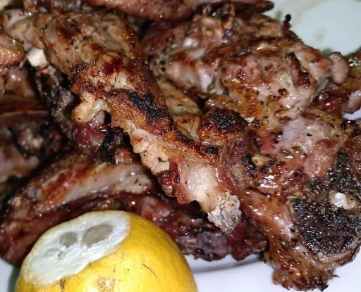
Ψητά στα κάρβουνα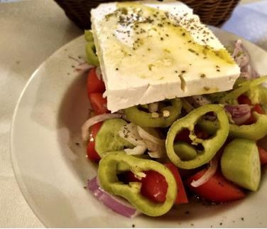
Χωριάτικη σαλάτα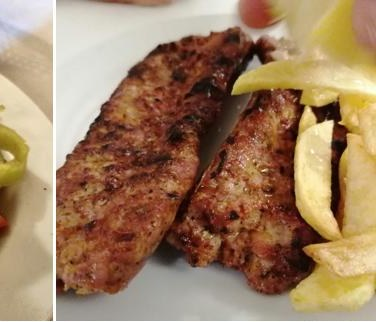
Σουβλάκι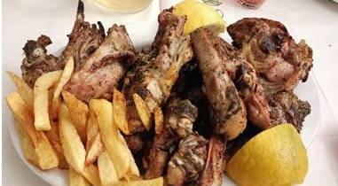
Παϊδάκια & πατάτες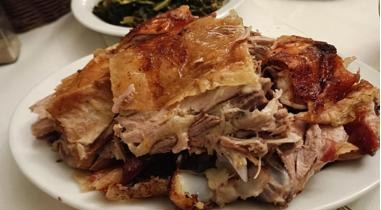
Ψητό χοιρινό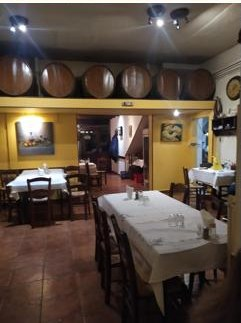
Το κατάστημά μας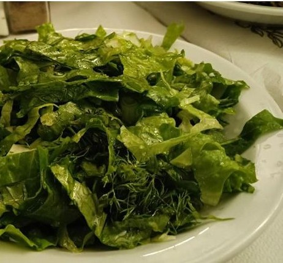
Μαρουλοσαλάτα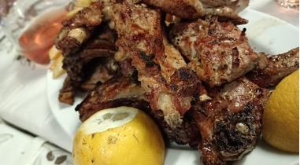
Στη σχάρα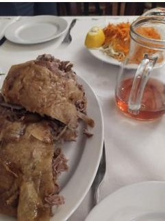
Με χύμα κρασί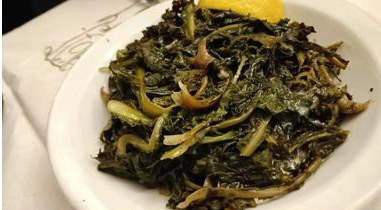
Χόρτα εποχής
Τι λένε οι επισκέπτες
4,6 στα 5 αστέρια
Πάνω από 190 κριτικές στο Google. Ορίστε μερικές από αυτές.
★★★★★
«Πολύ καλή ταβέρνα ψησταριά. Ευγενική εξυπηρέτηση, καλές τιμές.»
Φ
Φοίβος Κ.
Κριτική Google
★★★★★
«Ψητά στα κάρβουνα όπως παλιά και μερίδες που χορταίνεις. Μια σταθερή αξία του Βόλου.»
Γ
Επισκέπτης
Κριτική Google
★★★★★
«Ζεστό οικογενειακό περιβάλλον, νόστιμο κρέας και χύμα κρασί. Το προτείνουμε ανεπιφύλακτα.»
Χ
Επισκέπτης
Κριτική Google
Ώρες & Τοποθεσία
Θα μας βρείτε στην Ιωλκού
Διεύθυνση
Ώρες λειτουργίας
ΔευτέραΚλειστά
Τρίτη20:00 – 01:00
Τετάρτη20:00 – 01:00
Πέμπτη20:00 – 01:00
Παρασκευή20:00 – 01:00
Σάββατο20:00 – 01:00
Κυριακή13:00 – 18:00